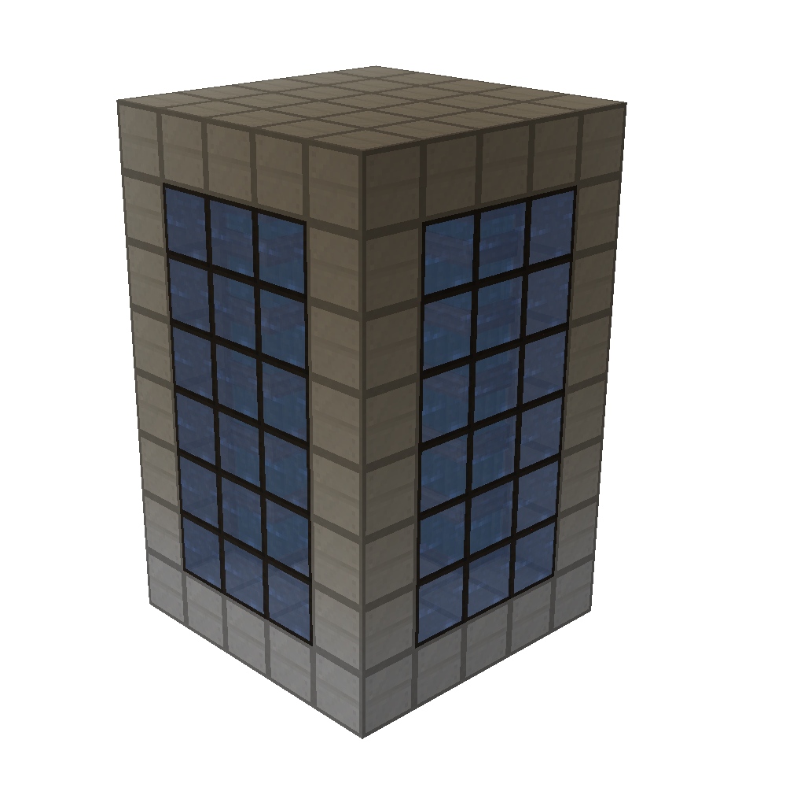
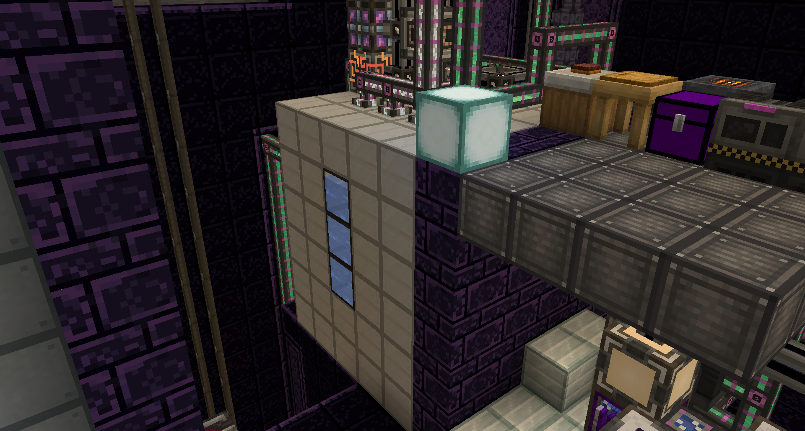
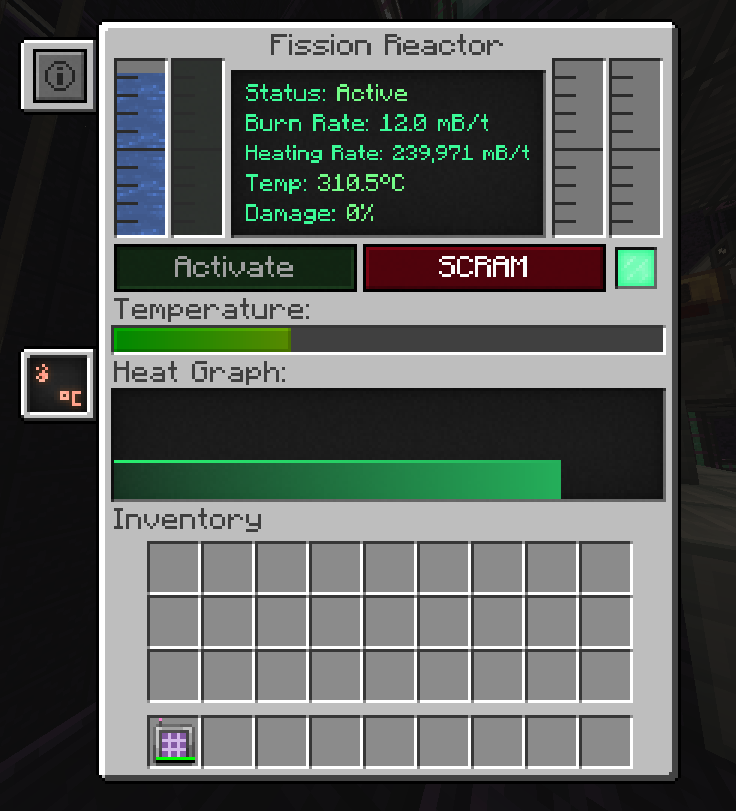
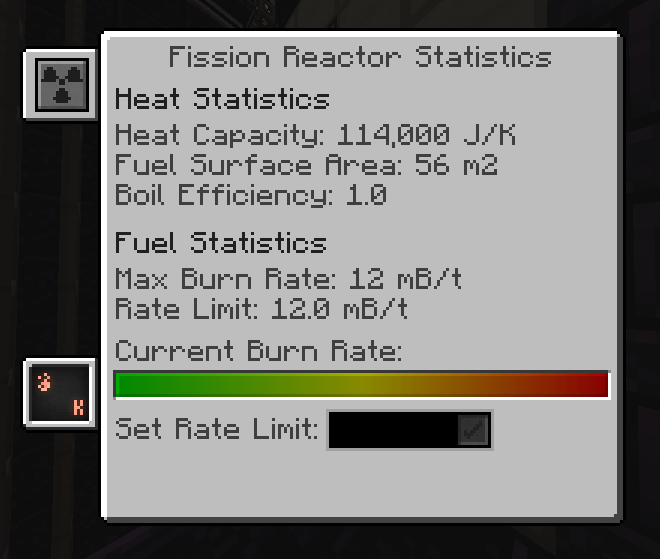

A fission reactor is a multi-block machine that is capable of producing enormous amounts of heat, which you can harness to generate massive amounts of power. However, if it is not supplied with coolant, it could trigger a meltdown. It is also a key milestone in progression, as it is needed to make polonium and plutonium, which are used to make the fusion reactor and the MekaSuit.
To build a fission reactor, you need Fission Reactor Casings, Fission Fuel Assemblies, and Control Rod Assemblies, which are necessary for the structure. Reactor Glass, Fission Reactor Ports, and Reactor Logic Adapters are optional.
The structure is built according to these rules:
Also, fuel assemblies/control rods should not touch each other. Optimal density can be achieved by placing them in a checkerboard pattern. Cooling is penalized if they touch.
To run the reactor, you need at least four Fission Reactor Ports: One for inputting coolant, One for coolant output,One for fissile fuel input, One for nuclear waste output
Validation Note: The multi-block will emit redstone particles upon final block placement if valid; otherwise, check your assembly.
The fission reactor GUI can be accessed from any side by right-clicking. In the GUI, you can see the reactor status (active or disabled), burn rate (the rate at which the reactor consumes fuel), heating rate (the rate at which the reactor heats coolant), temperature, and damage.

In the top-left corner, there is a button that is used to open another GUI to configure the burn rate.

but if fission reactor burn rate is too high or coling is not posseble or the waste tank is full it cood resolt in a meltdoun